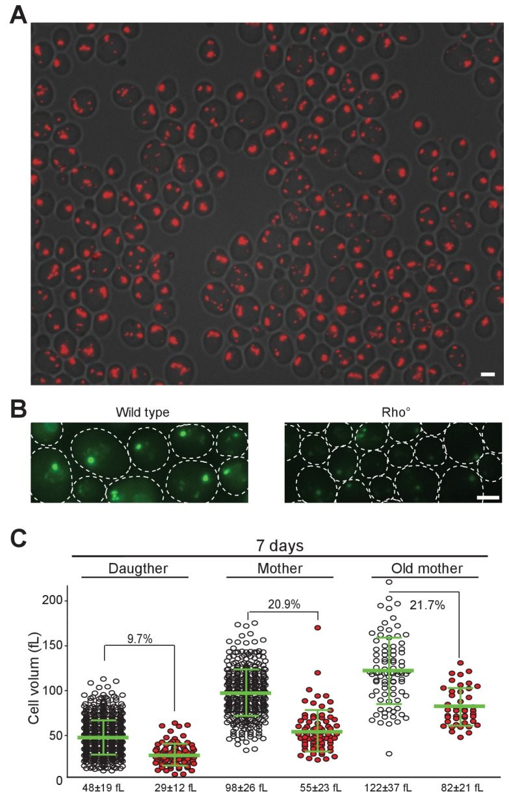

actin body
An amorphous cytoplasmic assembly of actin filaments and selected actin-binding proteins in growth-arrested yeast cells, distinct from cortical actin patches and actin cables. [GO:0099079]

NCBITaxon:4932) · Damien Laporte, Laëtitia Gouleme, Laure Jimenez, Ines Khemiri, Isabelle Sagot; CC BY, via PubMed Central · CC_BY_4_0 · source: PMC PMC6177259.1 fig5s1 · DOI:10.7554/eLife.35685Part of: GO:0015629 GO:0005737
Components
| Component | Type | Part of / acts on | Grounding | Genes | Stoichiometry | Essential | Role |
|---|---|---|---|---|---|---|---|
| Actin family | PROTEIN | part of | InterPro:IPR004000 | ACT1, ARP2 | UNKNOWN | Act1 supplies the filament scaffold. The related Arp2 protein is only a partial colocalizer; shared family identity does not make Arp2 a substitute filament monomer.
| |
| Abp1-like actin-binding adaptor | PROTEIN | part of | REVIEWED_LABEL_ONLY | ABP1 | UNKNOWN | Budding-yeast Abp1 colocalizes with bodies and serves as a live-cell reporter.
| |
| Abp140-like actin-binding methyltransferase | PROTEIN | part of | REVIEWED_LABEL_ONLY | ABP140 | UNKNOWN | Abp140 colocalizes with bodies; its methyltransferase annotation does not establish a catalytic requirement for body formation.
| |
| Fimbrin/Plastin | PROTEIN | part of | InterPro:IPR039959 | SAC6, fim1 | UNKNOWN | Fimbrin is a body-localized actin-bundling protein in both studied yeasts. The pleiotropic sac6 deletion phenotype does not establish family-wide body essentiality.
| |
| F-actin-capping protein subunit alpha | PROTEIN | part of | InterPro:IPR002189 | CAP1 | UNKNOWN | The budding-yeast alpha subunit colocalizes with bodies.
| |
| F-actin-capping protein subunit beta | PROTEIN | part of | InterPro:IPR001698 | CAP2, acp2 | UNKNOWN | The beta subunit localizes to bodies in budding and fission yeast.
| |
| Actin-related protein 2/3 complex subunit 5 | PROTEIN | part of | InterPro:IPR006789 | ARC15 | UNKNOWN | Partial budding-yeast body colocalizer; whole-complex membership and nucleation activity inside bodies are not established by this observation.
| |
| Actin-related protein 2/3 complex subunit 3 | PROTEIN | part of | InterPro:IPR007204 | ARC18 | UNKNOWN | Partial budding-yeast body colocalizer, not a fixed stoichiometric constituent.
| |
| Actin-related protein 2/3 complex subunit 2 | PROTEIN | part of | InterPro:IPR007188 | ARC35 | UNKNOWN | Partial budding-yeast body colocalizer, not evidence for all Arp2/3 subunits.
| |
| Coronin | PROTEIN | part of | InterPro:IPR015505 | CRN1 | UNKNOWN | Crn1 partially colocalizes in budding yeast. The fission-yeast study did not detect Crn1 in bodies, so membership is not generalized between these organisms.
| |
| Adenylate cyclase-associated CAP | PROTEIN | part of | InterPro:IPR001837 | SRV2 | UNKNOWN | Srv2 partially colocalizes with budding-yeast bodies. It is distinct from the capping alpha subunit even though CAP1 is also a historical SRV2 alias.
|
Organism-specific protein examples
Named proteins in which each component's role was established, with the organism the evidence comes from. The component above is the taxon-agnostic family; these are the specific entries behind it.
Actin family
| Accession | Protein | Gene | Organism | Entry |
|---|---|---|---|---|
UniProtKB:P60010 | Actin | ACT1 | Saccharomyces cerevisiae S288C (NCBITaxon:559292) | REVIEWED |
Role and evidence (2 references)Reference-sequence exemplar for the species-level microscopy; the accession does not assert that the exact reference stock was imaged.
| ||||
UniProtKB:P32381 | Actin-related protein 2 | ARP2 | Saccharomyces cerevisiae S288C (NCBITaxon:559292) | REVIEWED |
Role and evidence (2 references)Reference-sequence exemplar for the species-level microscopy; the accession does not assert that the exact reference stock was imaged.
| ||||
Abp1-like actin-binding adaptor
| Accession | Protein | Gene | Organism | Entry |
|---|---|---|---|---|
UniProtKB:P15891 | Actin-binding protein | ABP1 | Saccharomyces cerevisiae S288C (NCBITaxon:559292) | REVIEWED |
Role and evidence (2 references)Reference-sequence exemplar for the species-level microscopy; the accession does not assert that the exact reference stock was imaged.
| ||||
Abp140-like actin-binding methyltransferase
| Accession | Protein | Gene | Organism | Entry |
|---|---|---|---|---|
UniProtKB:Q08641 | tRNA(Thr) (cytosine(32)-N(3))-methyltransferase | ABP140 | Saccharomyces cerevisiae S288C (NCBITaxon:559292) | REVIEWED |
Role and evidence (2 references)Reference-sequence exemplar for the species-level microscopy; the accession does not assert that the exact reference stock was imaged.
| ||||
Fimbrin/Plastin
| Accession | Protein | Gene | Organism | Entry |
|---|---|---|---|---|
UniProtKB:P32599 | Fimbrin | SAC6 | Saccharomyces cerevisiae S288C (NCBITaxon:559292) | REVIEWED |
Role and evidence (2 references)Reference-sequence exemplar for the species-level microscopy; the accession does not assert that the exact reference stock was imaged.
| ||||
UniProtKB:O59945 | Fimbrin | fim1 | Schizosaccharomyces pombe 972h- (NCBITaxon:284812) | REVIEWED |
Role and evidence (2 references)Reference-sequence exemplar for the species-level microscopy; the accession does not assert that the exact reference stock was imaged.
| ||||
F-actin-capping protein subunit alpha
| Accession | Protein | Gene | Organism | Entry |
|---|---|---|---|---|
UniProtKB:P28495 | F-actin-capping protein subunit alpha | CAP1 | Saccharomyces cerevisiae S288C (NCBITaxon:559292) | REVIEWED |
Role and evidence (2 references)Reference-sequence exemplar for the species-level microscopy; the accession does not assert that the exact reference stock was imaged.
| ||||
F-actin-capping protein subunit beta
| Accession | Protein | Gene | Organism | Entry |
|---|---|---|---|---|
UniProtKB:P13517 | F-actin-capping protein subunit beta | CAP2 | Saccharomyces cerevisiae S288C (NCBITaxon:559292) | REVIEWED |
Role and evidence (2 references)Reference-sequence exemplar for the species-level microscopy; the accession does not assert that the exact reference stock was imaged.
| ||||
UniProtKB:Q9HGP5 | F-actin-capping protein subunit beta | acp2 | Schizosaccharomyces pombe 972h- (NCBITaxon:284812) | REVIEWED |
Role and evidence (2 references)Reference-sequence exemplar for the species-level microscopy; the accession does not assert that the exact reference stock was imaged.
| ||||
Actin-related protein 2/3 complex subunit 5
| Accession | Protein | Gene | Organism | Entry |
|---|---|---|---|---|
UniProtKB:P40518 | Actin-related protein 2/3 complex subunit 5 | ARC15 | Saccharomyces cerevisiae S288C (NCBITaxon:559292) | REVIEWED |
Role and evidence (2 references)Reference-sequence exemplar for the species-level microscopy; the accession does not assert that the exact reference stock was imaged.
| ||||
Actin-related protein 2/3 complex subunit 3
| Accession | Protein | Gene | Organism | Entry |
|---|---|---|---|---|
UniProtKB:Q05933 | Actin-related protein 2/3 complex subunit 3 | ARC18 | Saccharomyces cerevisiae S288C (NCBITaxon:559292) | REVIEWED |
Role and evidence (2 references)Reference-sequence exemplar for the species-level microscopy; the accession does not assert that the exact reference stock was imaged.
| ||||
Actin-related protein 2/3 complex subunit 2
| Accession | Protein | Gene | Organism | Entry |
|---|---|---|---|---|
UniProtKB:P53731 | Actin-related protein 2/3 complex subunit 2 | ARC35 | Saccharomyces cerevisiae S288C (NCBITaxon:559292) | REVIEWED |
Role and evidence (2 references)Reference-sequence exemplar for the species-level microscopy; the accession does not assert that the exact reference stock was imaged.
| ||||
Coronin
| Accession | Protein | Gene | Organism | Entry |
|---|---|---|---|---|
UniProtKB:Q06440 | Coronin-like protein | CRN1 | Saccharomyces cerevisiae S288C (NCBITaxon:559292) | REVIEWED |
Role and evidence (2 references)Reference-sequence exemplar for the species-level microscopy; the accession does not assert that the exact reference stock was imaged.
| ||||
Adenylate cyclase-associated CAP
| Accession | Protein | Gene | Organism | Entry |
|---|---|---|---|---|
UniProtKB:P17555 | Adenylyl cyclase-associated protein | SRV2 | Saccharomyces cerevisiae S288C (NCBITaxon:559292) | REVIEWED |
Role and evidence (2 references)Reference-sequence exemplar for the species-level microscopy; the accession does not assert that the exact reference stock was imaged.
| ||||
Taxonomic distribution
NCBITaxon:4932Saccharomyces cerevisiae — VARIABLE: Demonstrated in growth-arrested laboratory cultures; frequency and association with subsequent proliferation depend on culture conditions and cell state. [DOI:10.7554/eLife.35685]NCBITaxon:4896Schizosaccharomyces pombe — VARIABLE: Bodies were observed after glucose-exhaustion-induced growth arrest. This does not assert constitutive presence or presence in every strain. [DOI:10.1083/jcb.201502025]
Canonical examples
NCBITaxon:4932Saccharomyces cerevisiae — Single-cell tracking used BY4741/BY4742-related cultures grown seven days in YPD. The hosted Figure 5 supplement instead shows phalloidin-stained prototrophic rho-zero cells after 24 hours; these contexts are not conflated. [DOI:10.7554/eLife.35685]NCBITaxon:4896Schizosaccharomyces pombe — Figure 6C shows Fim1 and Acp2 localization and phalloidin-stained bodies after glucose exhaustion. The distinct quiescent microtubule bundle is not part of the actin body. [DOI:10.1083/jcb.201502025]
Mechanism graphs
Glucose metabolism enables actin-body mobilization (DISASSEMBLY)
| Subject | Predicate | Object | Evidence |
|---|---|---|---|
| glucose uptake | provides substrate for | glucose catabolism |
|
| glucose catabolism | enables | actin-body disassembly |
|
Discussions
- OPEN_QUESTION (OPEN): Does the actin body directly supply reusable actin to rebuilt patches and cables? Rapid refeeding-dependent disappearance and rebuilding without new protein synthesis support a reserve hypothesis, not traced transfer of body subunits. No established storage function or direct body-to-patch conversion is asserted.
- CURATION_TODO (OPEN): Resolve exact source-neutral families for Abp1-like adaptors and Abp140-like actin-binding methyltransferases. Native InterPro matches were inspected completely; generic domains and the broader METTL2/6/8-like family do not precisely identify these components.
- CURATION_TODO (OPEN): Resolve the gene and reporter called drebrin (Aap1) in the fission-yeast actin-body study. The paper reports a positive localizer, but native UniProt searches for aap1 return an amino-acid permease and an aspartyl aminopeptidase alias, not a verified drebrin. An app1 hit is not sufficient to correct the paper by inference. Supplementary strain and reporter provenance must establish the intended identity before an accession or a new family is assigned.
- INTERPRETATION (RESOLVED): Do partial localizers establish a fixed actin-body composition? Membership strength differs between proteins and organisms; co-occurrence is not a stoichiometric reconstruction. Sac6 loss is pleiotropic. Scp1 perturbation does not establish Scp1 residence, and fission-yeast polarity proteins lost from cell tips are not thereby body constituents.
- INTERPRETATION (RESOLVED): Does an actin body uniquely identify a viable quiescent cell? The 2018 study followed individual cells rather than inferring fate from a stationary population. Bodies occurred in cells with different subsequent proliferation outcomes.
- KNOWLEDGE_GAP (OPEN): Which metabolic signal connects glycolysis to actin-body disassembly? Glucose-dependent mobilization requires metabolism, but ATP replenishment is neither necessary nor sufficient in the tested assays. This does not establish that basal ATP is dispensable or that pyruvate itself is the signal.
Evidence
GO:0099079Exact nonobsolete cellular-component identity; native GO and cached OAK agree on actin-cytoskeleton parthood, not an is-a relation to the whole cytoskeleton.GO:0110165Native GO is-a parent: cellular anatomical structure.GO:0015629Actin cytoskeleton is a containing structure, not the record identity.GO:0005737Cytoplasm denotes the cellular compartment containing the observed bodies.DOI:10.1091/mbc.E06-04-0282Sagot et al. 2006 defining study. Indexed primary Results and figure captions were readable; complete Methods were not recovered through the attempted XML/BioC/PDF routes. No verbatim snippets or figure bytes are taken from this source.DOI:10.1083/jcb.201009028Laporte et al. 2011, Metabolic status rather than cell cycle signals control quiescence entry and exit. Native primary Results and Methods support metabolic requirements for body mobilization, not complete proliferation on glucose alone.DOI:10.1083/jcb.201502025Laporte et al. 2015, A stable microtubule array drives fission yeast polarity reestablishment upon quiescence exit. Only the actin-body localization results are used here; microtubule-bundle functions remain outside this record.DOI:10.7554/eLife.35685Laporte et al. 2018, Mitochondria reorganization upon proliferation arrest predicts individual yeast cell fate. Direct cell tracking shows bodies in both quiescent and senescent subpopulations.
Curation history
2026-10-05T14:39:58Zcodex · CREATED_RECORD — Scaffolded by scripts/new_record.py2026-10-05T14:43:03Zcodex · EXPANDED_RECORD — Added eleven component classes, fourteen verified protein examples, scoped yeast distribution, a two-edge disassembly mechanism, licensed microscopy and explicit family, reporter-identity and physiological-interpretation boundaries.2026-10-05T14:44:18Zcodex · CORRECTED_FIGURE_REFERENCES — Corrected two 2011 glucose-catabolism figure references from Figure 5 to Figure 4 after reading the native JATS captions.